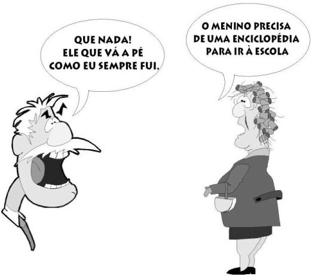

Como ressalta Luria (1979), interpretar uma frase não é apenas assimilar o significado de cada palavra que a compõe. O processo de decodificação ou interpretação da comunicação é sempre um meio de decifrar o sentido geral, implícito na comunicação recebida ou, em outras palavras, um complexo processo de discriminação dos elementos mais importantes do enunciado, a transformação de um sistema desenvolvido de comunicação no pensamento nela latente (p. 76). Além disso, interpretar um enunciado falado é diferente de interpretar um enunciado escrito. Na fala existem fatores – que não aparecem na escrita – que auxiliam no entendimento daquilo que se quer dizer: gestos, entonação, posição e expressão corporal etc.
Assinale a alternativa correta. Na piada ilustrada ao lado o sentido atribuído por Manuel foi possível devido a que tipo de relação?
a) Relação com o texto: conotação/denotação.
b) Relação entre as palavras: precisar de algo para ir à escola. Esse algo é preenchido pelo interlocutor com um meio de transporte, mas poderia ser preenchido por um material escolar ou uniforme, por exemplo.
c) Relação com o filho: como o pai não tem uma boa relação com o filho, nega-se a dar o que o filho quer.

Como ressalta Luria (1979), interpretar uma frase não é apenas assimilar o significado de cada palavra que a compõe. O processo de decodificação ou interpretação da comunicação é sempre um meio de decifrar o sentido geral, implícito na comunicação recebida ou, em outras palavras, um complexo processo de discriminação dos elementos mais importantes do enunciado, a transformação de um sistema desenvolvido de comunicação no pensamento nela latente (p. 76). Além disso, interpretar um enunciado falado é diferente de interpretar um enunciado escrito. Na fala existem fatores – que não aparecem na escrita – que auxiliam no entendimento daquilo que se quer dizer: gestos, entonação, posição e expressão corporal etc.